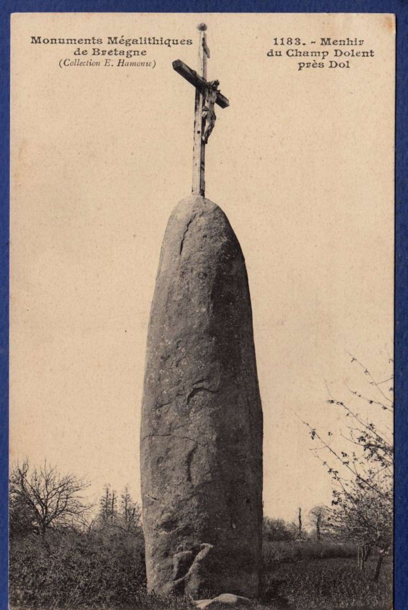
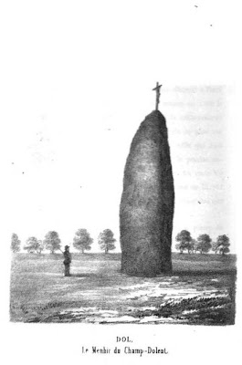

Gravé dans le marbre
On estime que son érection a été effectuée entre -4000 et -2200 Av.JC.
Il est en revanche très difficile d'attribuer son origine avec certitude.
Stendhal prétendait tenir de son guide que César aurait placé le Menhir en cet endroit, mais rien ne permet de corroborer cette affirmation.
D'ailleurs, les fouilles de 1802, réalisées par l'abbé Revert, un archéologue de Dol-de-Bretagne, n'ont pas révélé beaucoup d'informations sur la raison de sa présence.
Depuis 1889, il fait l'objet d'un classement au titre des monuments historiques de France. Joseph Déchelette le mentionne par ailleurs comme étant "l'un des plus beaux menhirs de France".
 
Croix de bois, croix de pierre
Le Menhir de Champ-Dolent fut christianisé pendant une certaine période, c'est-à-dire qu'on installa un crucifix à son sommet.
S'il est aujourd'hui litigieux de dater l'installation de cette croix avec précision, on sait en revanche qu'elle a été retirée à la Révolution puis replacée en 1816.
Sa présence sera abolie une ultime fois au début du 20ème siècle, brisée par une forte tempête d'après les témoignages locaux...
Il est à noter que cette christianisation l'a peut-être sauvé à une époque. En effet, les œuvres et lieux de cultes païens étaient souvent voués ou bien à être christianisés, ou bien à être détruits.